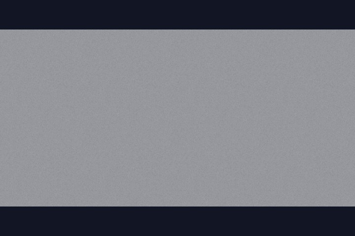
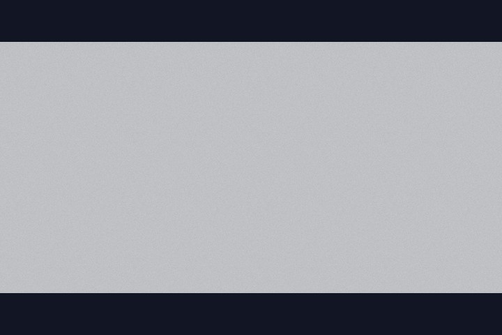
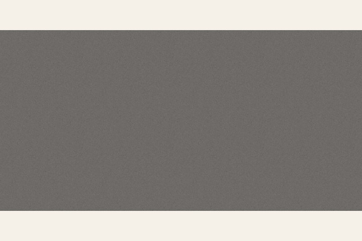
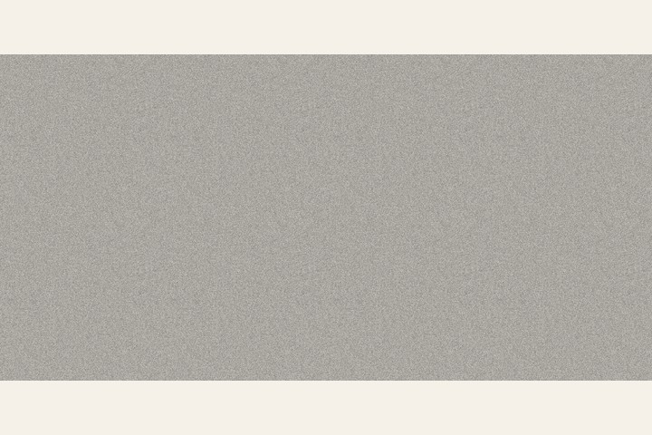
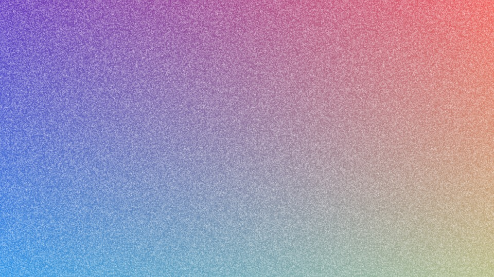

Download the free textures
These are white grain on a transparent background. Use blend mode Overlay or Soft Light at 10–40% opacity. They tile without a visible seam (period matches a 1024px CSS repeat).


Download PNG


Download PNG
On light backgrounds the white grain is subtle by design. Preview of soft grain darkened for paper mockups:


What soft-light grain looks like on a gradient

Same soft-grain PNG composited over a mesh gradient at ~65% of its native alpha — the usual look for UI heroes and wallpapers.
CSS: noise texture PNG with soft-light
Put the PNG above your colour layer. mix-blend-mode: soft-light or overlay keeps the colour and adds film grit:
.surface {
position: relative;
background: linear-gradient(135deg, #2a3558, #c4784a);
}
.surface::after {
content: "";
position: absolute;
inset: 0;
background: url("soft-grain-seamless-2048.png") center / 512px 512px repeat;
mix-blend-mode: soft-light;
opacity: 0.35;
pointer-events: none;
}- Strength: raise or lower
opacity(0.15 subtle, 0.45 heavy). - Scale: change
background-size. 256px looks coarse; 1024px looks fine. - Mode:
overlayis punchier;soft-lightis closer to photographic grain. - Performance: a tiled PNG is cheaper than a live SVG
feTurbulencefilter on large full-screen areas.
Figma, Photoshop, Canva, Premiere
- Place the PNG on the top layer.
- Set blend mode to Overlay or Soft Light.
- Drop opacity to 10–40% until the grit reads, not the white.
- Video editors: top track, blend Screen or Overlay, opacity 15–30%.
Figma also has Effects → Noise if you only need a quick mock; a PNG overlay stays consistent when you export to CSS or hand the file to a developer.
License
Use both free files for anything personal or commercial: sites, apps, print, client work, products you sell. No attribution required. The only restriction: do not re-upload or sell these files themselves as stock, texture packs or wallpaper packs.
Procedurally generated (not AI diffusion, not scraped stock). Source pack: GRAIN + NOISE on Gumroad.
Need the other six overlays?
The free pair is from GRAIN + NOISE: eight transparent overlays (soft, fine, coarse, film mono, paper fiber, dust, halftone, scanlines), 2K–4K, same commercial license, seamless for CSS tiling — $3. Want matching grainy mesh wallpapers too? MESHGRAIN is 100 backgrounds + the overlays for $6.
GRAIN + NOISE — 8 overlays, $3 MESHGRAIN — 100 backgrounds, $6Also free: grain texture live preview · grainy gradient wallpapers · ogkit · Favikit · AppShot
Last checked 2026-11-03. Files match the live GRAIN pack on Gumroad (seamless 1024px tile period).